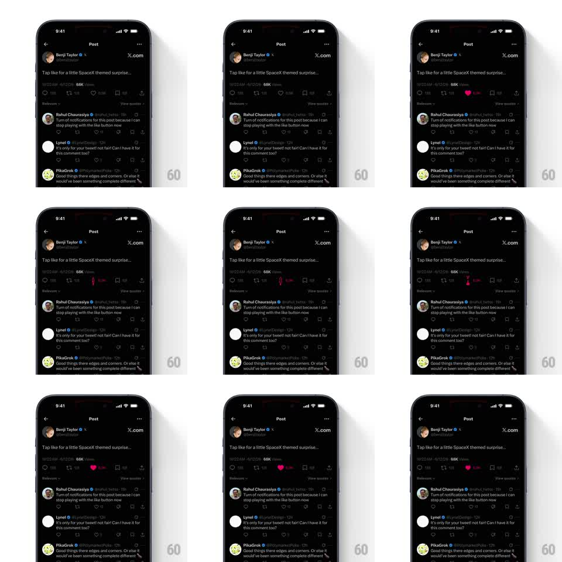

Media
Frame-by-frame

Rebuild this animation 1:1: X's themed like - tapping the heart on a themed post fires a custom burst: the heart fills red, the like count ticks up, and a spray of tiny themed particles erupts from the icon and drifts before dissolving.

Rebuild this animation 1:1: X's themed like - tapping the heart on a themed post fires a custom burst: the heart fills red, the like count ticks up, and a spray of tiny themed particles erupts from the icon and drifts before dissolving.
## Integration
Integration: stack-agnostic spec - springs given as stiffness/damping, timed motions as duration + curve; map every value to your framework and animation library of choice.
## Scene
Dark post detail: author header, post text ("Tap like for a little SpaceX themed surprise..."), engagement row (reply, repost, heart + count, views, bookmark), replies below.
## Motion spec
Pattern: tap-triggered icon celebration, ~1s.
- Touch-down: the heart scales to 0.8 (80ms), then springs to filled red (scale 1 -> 1.3 -> 1, spring ~450/18, 250ms) - the classic pop.
- Burst: a ring of ~10 small particles (mix of dots and themed shapes) erupts radially from the heart (travel 24-40px, 400ms, ease-out) with a quick concentric ring flash (scale 0 -> 1.6, fade, 300ms).
- Particles drift upward slightly as they fade (translateY -8px over the last 200ms).
- The count ticks up with a small flip (rotateX 90 -> 0, 200ms) in tabular-nums.
- Unlike: heart springs back to outline (200ms), no particles.
## Calibration
- The whole show is under a second - like animations must survive being triggered 20 times in a session.
- Particle shapes carry the theme (rockets/stars for SpaceX); the motion system is identical to the default like.
## Reduced motion
Heart fills with a 150ms fade; count sets instantly.
## Don't miss
- The ring flash sits behind the heart; particles in front.
- The icon returns to its exact resting size - no lingering scale drift.